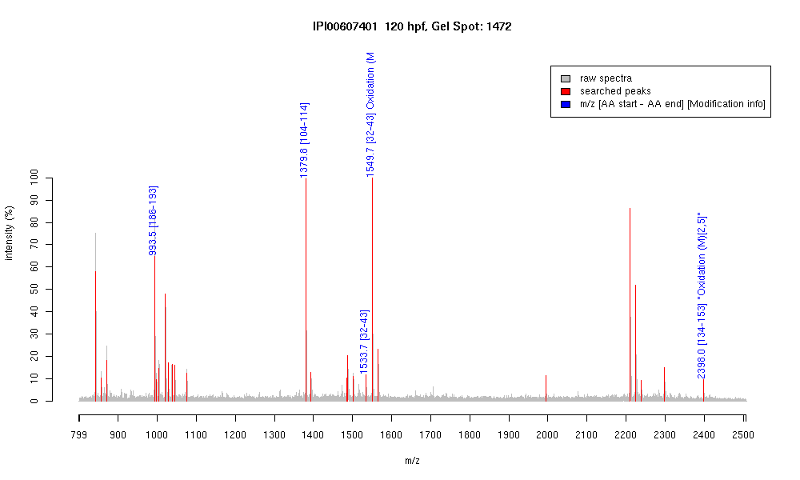

| Name | "PREDICTED: similar to crystallin, beta B1" |
|---|---|
| MW | 25550.8 |
| PI | 6.88 |
| Mascot Protein Score | 72 |
| Masses (matched / unmatched) | 4 / 31 |

| Peptide | MZ (calc) | MZ (observed) | Error (DA) | Error (PPM) | Start | Stop | Modifications |
|---|---|---|---|---|---|---|---|
| HFNEYGAR | 993.4536 | 993.4554 | 0.0018 | 2 | 186 | 193 | |
| NDYLLSFRPVR | 1379.743 | 1379.7509 | 0.0079 | 6 | 104 | 114 | |
| MYVFDQENFQGR | 1533.6791 | 1533.7429 | 0.0638 | 42 | 32 | 43 | |
| MYVFDQENFQGR | 1549.674 | 1549.6843 | 0.0103 | 7 | 32 | 43 | Oxidation (M)[1] |
| KMEIMDDDVPSLFSYGFTDR | 2398.0576 | 2398.0442 | -0.0134 | -6 | 134 | 153 | "Oxidation (M)[2,5]" |